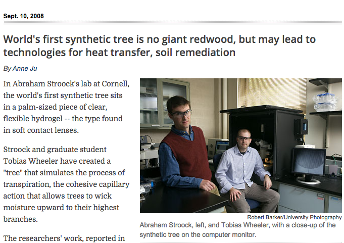
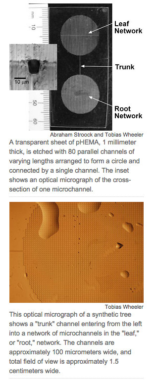

name: inverse layout: true class: center, middle, inverse --- # Transport I: water --- # How does water get to the top of trees? --- <img src="http://i.imgur.com/91lnAGL.jpg" alt="Drawing" style="width: 600px;"/> --- <img src="http://i.imgur.com/91lnAGL.jpg" alt="Drawing" style="width: 600px;"/> # "Hyperion" - 115.61 metres # Sequoia sepervirens --- <img src="http://d3lp4xedbqa8a5.cloudfront.net/s3/digital-cougar-assets/AusGeo/2013/09/10/5787/tallest_tree_nat_new.jpg?MaxHeight=564&MaxWidth=960&Height=564&Width=960&VAlign=Center&Align=Center&Pad=true" alt="Drawing" style="width: 600px;"/> -- ##99.6 m ##Eucalyptus regens --- <img src="http://www.summitpost.org/images/original/364993.jpg" alt="Drawing" style="width: 600px;"/> --- layout: false .left-column[ ## C3 plants transpire a lot ] .right-column[ A tree might transpire >400 liters in a day ] --- <img src="http://revistapesquisa.fapesp.br/wp-content/uploads/2013/05/p44_Ilhas.jpg" alt="Drawing" style="width: 600px;"/> --- #Getting CO2 into the leaf means losing water <img src="http://preuniversity.grkraj.org/html/4_PLANT_AND_WATER_RELATIONSHIP_files/image035.jpg" alt="Drawing" style="width: 600px;"/> --- #Plants compete for sunlight by growing tall, and water is needed at the site of photosynthesis, so water transport is a competitive problem. --- # Root pressure was the obvious hypothesis, like a pump --- # Cutting down a tree doesn't make a fountain <img src="https://upload.wikimedia.org/wikipedia/commons/0/0f/Freshly_cut_tree_stump.jpg" alt="Drawing" style="width: 600px;"/> --- # Cohesion-tension theory ## (1894 by John Joly and Henry Horatio Dixon) <img src="http://www.as.wvu.edu/~rbrundage/lecture7b/img010.jpg" alt="Drawing" style="width: 600px;"/> --- # A bit of anatomy: stems <img src="http://edenhills.files.wordpress.com/2012/04/dsc_00521.jpg" alt="Drawing" style="width: 600px;"/> --- class: center, middle #A closer look <img src="http://upload.wikimedia.org/wikipedia/commons/b/bf/Hardwood_Pores.jpg" alt="Drawing" style="width: 250px;"/> At maturity the protoplast--the living material of the cell--dies and disappears, but the lignified cell walls persist. --- #Features of the pipes: vessels versus tracheids ### Differences between trachedis (all vascular plants) and vessels (special cell only in 99% angiosperms) ### Max diameter of the vessel is bigger. This matters a lot! See Hagen-Poiseuille equation (Resistance ~ diameter<sup>4</sup>) ### Stackable: vessel elements can stack without the water going through pits ### Bigger elements, in general, are more susceptible to *embolism* --- class: center, middle ##A bit closer still: the complex trade-off of connectedness <img src="http://upload.wikimedia.org/wikipedia/commons/3/33/Hoftuepfel_Picea_abies_LR.jpg" alt="Drawing" style="width: 600px;"/> --- # Stop and think ## 4 things that effect the potential energy of water (ie. can drive water flow) <img src="https://upload.wikimedia.org/wikipedia/commons/5/51/ShiFengWaterFall_002.jpg" alt="Drawing" style="width: 600px;"/> --- <img src="http://biology-forums.com/gallery/18099_29_04_12_6_46_09.jpeg" alt="Drawing" style="width: 600px;"/> --- <img src="http://www.tankonyvtar.hu/en/tartalom/tamop425/0032_talajtan/images/new/44.bmp" alt="Drawing" style="width: 600px;"/> --- # Water potential is additive <img src="http://agron-www.agron.iastate.edu/courses/Agron541/classes/review/water/images/potential.gif" alt="Drawing" style="width: 400px;"/> --- class: center, middle, inverse #Everything in one picture, will come back to this <img src="http://classconnection.s3.amazonaws.com/962/flashcards/1130962/png/picture21364251542565.png" alt="Drawing" style="width: 600px;"/> --- # First "artificial tree" in 2008 at Cornell <p></p> --- # First "artificial tree" in 2008 at Cornell --- # First "artificial tree" in 2008 at Cornell <p></p> --- <img src="http://www.writework.com/uploads/17/171567/water-potential-updated.png" alt="Drawing" style="width: 600px;"/> ### Notice that the salty water has a negative water potential --- <img src="http://www.extension.org/sites/default/files/w/a/a7/Pressure_chamber_diagram.jpg" alt="Drawing" style="width: 600px;"/> --- # Measuring water potential <img src="https://encrypted-tbn2.gstatic.com/images?q=tbn:ANd9GcSWWY4HofZLWxVYYEYnOtjxK_m8oO5xU6m0RQhWoqRNumjT6p9d" alt="Drawing" style="width: 600px;"/> --- # Trees are amazing but every biological system has limits <img src="http://nca2014.globalchange.gov/sites/report/files/images/web-large/photo-1-hi_5.jpg" alt="Drawing" style="width: 600px;"/> ## What happens during droughts? --- # Bubbles = embolism! (like a stroke but for a tree) <img src="https://researchraves.files.wordpress.com/2013/03/xylem-embolism-image.png" alt="Drawing" style="width: 600px;"/> --- #Key structures: - Vessel elements (like big tracheids with special connectors, only angiosperms) - Tracheids (all vascular plants, everything after mosses) - Pits - Phloem - Stomata - Cambium --- #Key concepts: -Transpiration-photosynthesis compromise -Water potential -Cohesion-tension theory -Embolism --- ### evolution of water transport <img src="https://pbs.twimg.com/media/EDOm4iTWsAIdQyF.jpg" alt="Drawing" style="width: 380px;"/> Moving from the water onto land and then onto the driest land ---